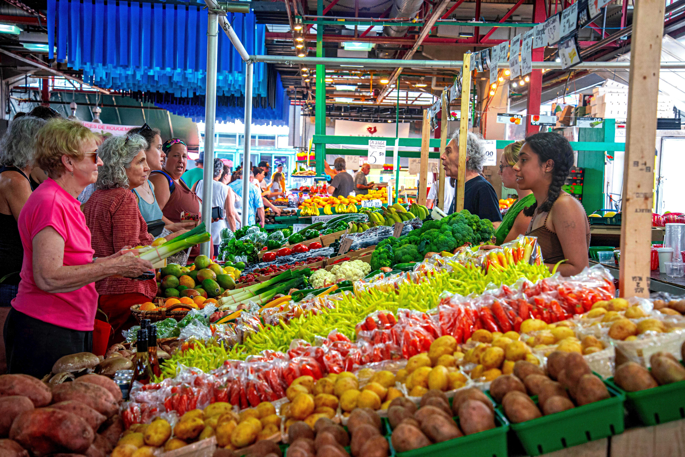
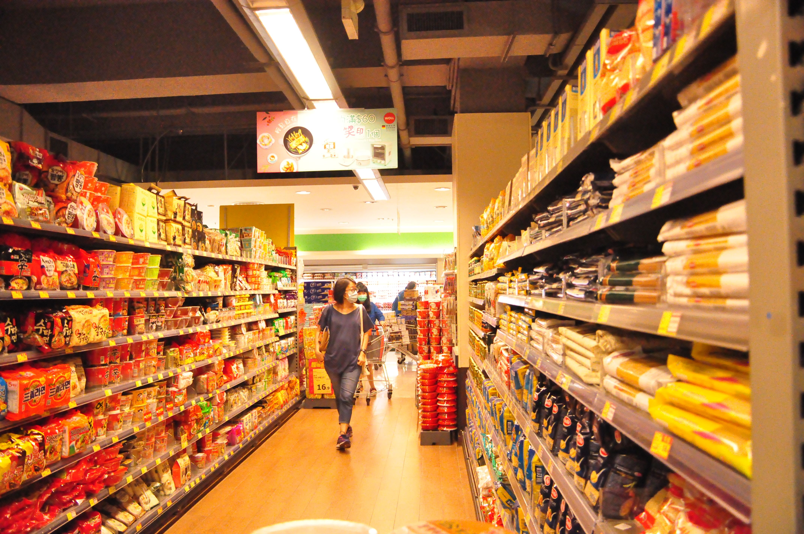
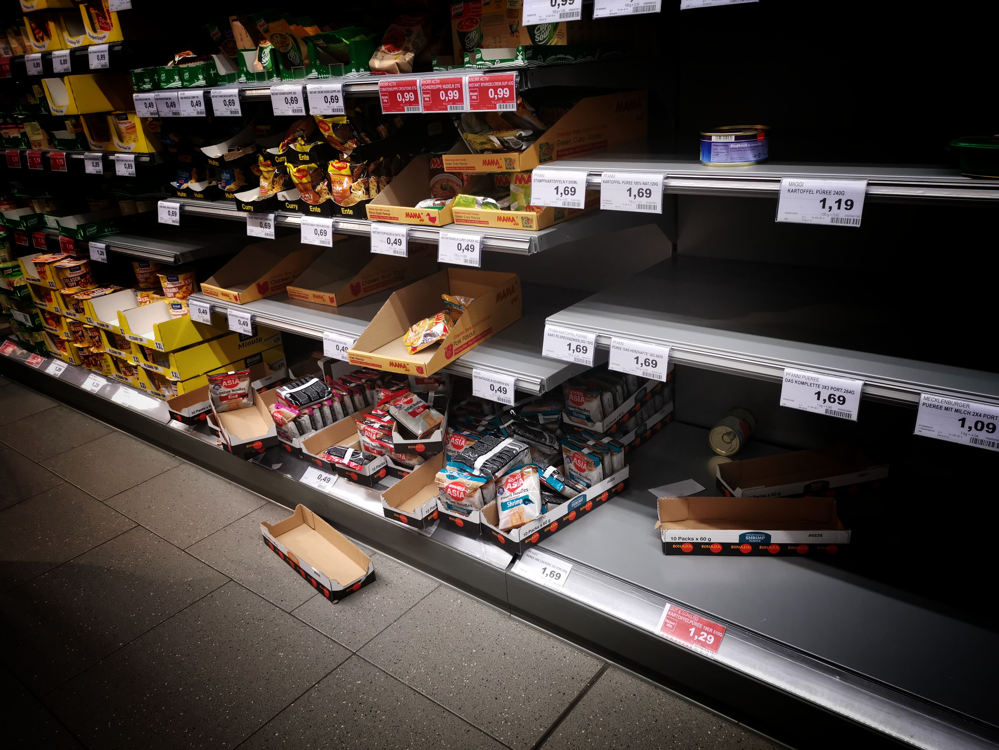

Contexto
Cuando existen bloqueos o rutas alternativas, los conductores deben recorrer más kilómetros, aumentando significativamente los costos de transporte.

Proyecto desarrollado para analizar situaciones reales relacionadas con transporte, compras familiares y abastecimiento durante contextos de crisis.
Este simulador permite comprender cómo diferentes situaciones pueden afectar la economía familiar y el abastecimiento. Los modelos utilizados son matemáticos y tienen fines educativos.
En la actualidad pueden presentarse problemas relacionados con el transporte, el aumento de precios y los rumores de escasez que afectan directamente a las familias. Este proyecto busca representar dichas situaciones mediante simuladores interactivos desarrollados con HTML, CSS y JavaScript.
Cuando existen bloqueos o rutas alternativas, los conductores deben recorrer más kilómetros, aumentando significativamente los costos de transporte.
Se calcula el costo normal y el costo con desvío utilizando la distancia recorrida y el costo por kilómetro.
| Dato | Valor |
|---|---|
| Distancia normal | 10 km |
| Distancia con desvío | 16 km |
| Costo por km | 2 Bs |
| Viajes por semana | 5 |

Las familias cuentan con presupuestos limitados y deben evaluar si sus ingresos alcanzan para cubrir sus necesidades.
Se calcula el total de compra y se compara con el presupuesto disponible.
| Dato | Valor |
|---|---|
| Presupuesto | 500 Bs |
| Total compra | 580 Bs |

Cuando existen rumores de escasez, muchas personas compran más de lo habitual provocando problemas de abastecimiento.
Se calcula la nueva demanda a partir del porcentaje de incremento generado por el rumor.
| Dato | Valor |
|---|---|
| Demanda normal | 100 |
| Aumento | 40% |
| Stock disponible | 120 |
Este proyecto demuestra cómo la programación web puede utilizarse para analizar situaciones reales que afectan a la economía familiar y al abastecimiento de productos.